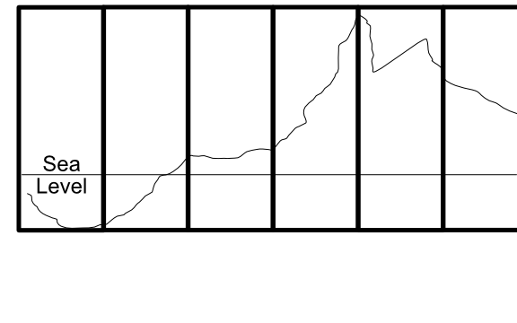
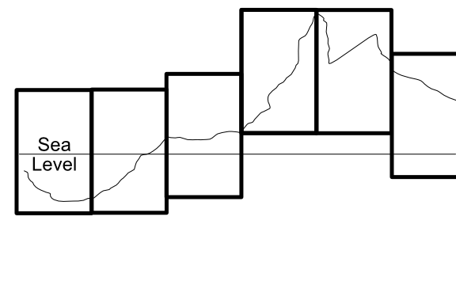
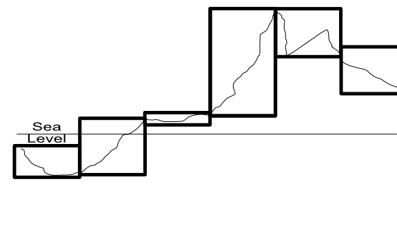

Terrains and TerrainData¶
Unity has a "Terrain" component that can be added to any gameObject. This combines a mesh, a level-of-detail (LOD) system, as well as layered textures and systems for representing trees, plants, rocks, and other details. For build-time terrain objects, there are extensive tools available in the Unity editor for shaping, texturing, and adding objects to terrains.
Some of these components are deferred into a TerrainData class; one TerrainData is present in each Terrain object. Generally, it's not important for this discussion which attributes are where, but most of the data heavy objects (alpha, detail and height maps, for example) are in the TerrainData object.
We won't use all of its capabilities. For example, Terrains have a navMesh component which can be used to determine where players or NPCs can travel. Because this is "baked" at build time, it can't easily be used with entirely procedurally generated terrains.
Heightmaps¶
Unity Terrains are heightmap-based; that is, they consist of exactly one height (y) value for each (x, z) coordinate. As such, they are effectively 2.5D objects -- they cannot themselves represent overhangs, bridges, caves, etc. If such things are needed, they must be composed of multiple terrain objects, added on as separate meshes, or implemented using some other technique such as voxels.
A quirk of Unity heightmaps is that they are stored as (z, x) values rather than (x, z) ones; it's not clear why the indices are backward, and different types of maps on the TerrainData object handle this differently, so you need to keep an eye on it.
Terrain objects can be stitched together to create larger terrains, and individual terrains within the group loaded and unloaded as necessary for resource management. For editor-built terrains, this stitching is automatic; we'll need to do it manually for ours.
The heightmap data is provided as an array of values from 0 to 1, and this brings us to our first challenge.
The problem of scale¶
Terrain objects (or more specifically, their TerrainData substructure) have a field called size. When the Terrain gameObject is first created (from a supplied TerrainData), this is set to a vector containing the x, y, and z dimensions of the object. "x" and "z" will be determined from the number of samples in the heightmap and their resolution, but "y" is always set to 1. Since that value corresponds to the maximum height in the terrain in world units, "1" wouldn't work for all but the very flattest of regions. So we can snag the y value and set it to something else:
TerrainData td = new TerrainData();
Vector3 tdsize = td.size;
tdsize.y = 1200f;
td.size = tdsize;
The question is, what do we set it to?
The heightmap [0,1] values are interpreted in the scale of size.y. If we set it to 1200 (as shown in the code example), that means a value of 0.0 in the heightmap is 0 world units high, and a value of 1.0 is 1200 world units high.
For the typical interpretation, that's 1.2 kilometers of vertical range over whatever our horizontal dimensions are. Terrain objects are typically pretty small -- maybe a square kilometer at the largest, 512 meters square being more common. (Sizes need to be a power of two). Very steep mountains might have areas where they gain 1.2 kilometers of height in less than a kilometer of horizontal space, but we could probably live with that limitation for our engine, and if we couldn't, a size.y value of 2500 would probably cover even the exceptional cases.
...but wait.
Remember that our terrain object is a patch of a larger world, and we have to stitch those terrains together seamlessly.
How high is Mt. Everest?¶
The first question we need to answer is: "What does 0 mean as a height?" It's the lowest possible value for that terrain patch, but what does that mean?
Consider a relatively flat plain, where there's no feature higher than 1 meter over our square kilometer patch. Assuming size.y is set to 1000, that means that the difference between the lowest heightmap value and the highest one will be 0.001.
Does that mean that all the values will be between 0 and 0.001?
If we have two such plains, but one (call it "Plain A") has values between 0 and 0.001 and the other ("Plain B") has values between 0.5 and .501, what's the difference between them? We'll come back to this question in a bit.
Mt Everest's height is often given as about 8,800 meters, but that's from sea level. From its "base," it's between 3,500 and 5,000 meters (it's a big mountain, the base covers a lot of area.) And if we're measuring in a system that starts at zero and needs to cover every undersea area, as well, our "absolute zero" point would be the bottom of the Marianas Trench, which would add maybe another 11,000 meters, for a total of about 20,000. An argument might be made for going deeper than that, too, in case we needed to account for undersea drilling or somesuch.
Any of these values are reasonable.
- If we're representing a 1km square chunk of Everest using a 0 - 20,000 range, a large amount of the range will be "wasted," that could be used for greater precision (see below).
- If we don't use a 0 - 20,000 range, we need to keep track of what "zero" height for whatever range we do use is. It also means that a heightmap value of, say, 0.5 will mean something different for each individual terrain. That difference needs to be accounted for at stitching time.
The heightmap values are floating-point, and there's no way to make use of negative values, so our range limit of roughly 0.0 - 5,000.0 for the scaled height applies. If we have a larger range than that, we'll start to lose resolution; at 0.0 - 20,000, our precision will drop to about a tenth of a meter.
That may be fine: terrains are fairly coarse objects, and maybe centimeter resolution isn't required, especially because the horizontal resolution of vertices is usually an entire meter. Whether or not this produces visible polygonization artifacts and jitter will likely require testing on your target hardware.
Does your world have a Mt. Everest and a Marianas Trench? If it's modelled on the real world...maybe. Airplanes are notoriously bad at flying underwater. Does your flight simulator need to measure distances below sea level? Naval simulators are unlikely to get near tall mountains. Subnatica takes place almost entirely underwater; the highest land areas in the game are less than fifty meters high.
If you're making a computer game, unless "huge vertical range" is a specific feature, there are good arguments for a much smaller one. Those Skyrim mountains are very short: not because the artists were afraid of heights, but because climbing five thousand feet up the side of a mountain takes a lot of time. That's more than the player likely wants to commit. Realistic or not, a five kilometer "range" from the deepest ocean to the tallest mountain is a pretty big canvas for an adventure.
Height models¶
So there are at least three possible mechanisms we can use here, each with some pros and cons. Let's look at each one in turn.
Uniform Range, Uniform Base (UR, UB): In this model, we use the same range for every terrain patch; it represents the entire distance from the lowest point to the highest point in our game world. Stitching is automatic as long as the patches generate compatible edges. In this model, the difference between Plain A and Plain B above is altitude, Plain B is higher above sea level (or closer to sea level if undersea) than Plain A is. Because the scale, range, and interpretation of every terrain patch is uniform, this is relatively easy to implement. The major downside of it is that the entire world's highs and lows need to fit into the chosen range, which means either limiting it to 5 kilometers of vertical scope or accepting some loss of resolution (and associated artifacts) to get a larger one.

Uniform Range, Dynamic Base (UR, DB): In this model, we use the same range for every terrain patch (so a "hill" 0.15 high will be the same size in every patch), but interpret the bottom of the range differently for each patch based on it's local highs and lows. For example, a patch from the side of a beach rise might range from 0 to 500 meters above sea level, the next patch "uphill" from 400 to 900 meters. This involves keeping a "base height" for each terrain that indicates what "zero" means for that patch. This method allows us almost unlimited global range. In implementation, the entire terrain object will be moved up or down relative to its neighbors to achieve the correct relative position. This is only slightly more difficult to implement, and allows a sort of "floating origin" to keep the terrain chunks near the player in the 10K window (negative values are possible here because you can position the actual terrain lower than zero). Whether stitching is problematical or not will depend on implementation details; assuming the edges match in "real world" heights and the terrains are properly positioned vertically, things should match up. But because there are more transforms involved here, there's a chance of small rounding differences showing up as holes along the patch edges.

Dynamic Range, Dynamic Base (DR, DB): In the most complicated model, we use the entire range available for each patch to cover it's local highs and lows. That is, if the lowest and highest points in a patch are 300 and 500 meters, the range for the patch will be 200. If the low and high are -500 and 3000 within that single patch, the range will be 3500. This needs to be coupled, like the last case, with a dynamic height to indicate what "0.0" means in that patch. Generation also becomes harder because the same "distance" in heightmap [0,1] space means something different in each patch. Rounding is almost certain to be different between patches, making stitching difficult.

(The missing case here, Dynamic Range and Uniform Base, combines the worst of all worlds and doesn't really merit discussion, "implicit" stitching will almost certainly fail because of artifactual differences between patches.)
The DR, DB model only makes sense for scenarios where very fine gradations in height are critical, or where there are patches of very extreme local height differences (five kilometer high sheer cliffs or some such) to justify the need for dynamic range.
The other two have the advantage that their implementations are similar enough (basically some fixed vertical offsets) that migrating from one to the other at any time would be both simple and could be done locally at the point of terrain generation. So it makes sense to implement that easier (UR, UB) model initially, and move to the UR, DB one if the need arises.
Stitching¶
"Stitching" is the process of making sure there are not visible seams or holes where the terrain patches meet each other. Ideally, we'd like "implicit" stitching. That is, for the edge vertices (which are in common to both patches), we'd like those edges to have exactly the same values. Since we're using floating point numbers, that pretty much means they need to be generated in exactly the same way, by a deterministic process that's idempotent, a Scrabble-caliber word that just means that the same inputs always produce the same outputs.
Most Perlin/Simplex noise generators meet this criteria, so if our algorithm uses the same position values in each patch, it should produce identical heights along those edges (realizing that the height range of the patch is an input here, which is where uniform ranges are a benefit). In the best cases, implicit stitching allows our implementation to do nothing at all and get proper behavior. The edges just "line up" in space as a property of being in the same position.
If we can't assume that our generation for different patches will produce exactly the same results, we then have to consider an actual stitching algorithm. This is likely when the two patches have even slightly different geomes: they may both be using Perlin-ish noise, but probably not the same Perlin-ish noise for a mountain as for a foothill. And once we start implementing erosive forces, they may also have different effects on the "same" position in neighboring patches.
There are several possible algorithms. Unity has a built-in one, that basically takes an "old" and a "new" terrain and forces the values of the "new" terrain to match the "old" one, even when new heights are provided. This is really meant for use in the editor, and there's some uncertainty around its use in procedurally generated terrains. An experiment for another day, perhaps.
If we expect that two adjacent patches have very similar edges (e.g. they differ only by rounding differences or a just a few centimeters of displacement), we can use a for loop to run along the edge of one or both terrains and set their height values to match (either one taking the other's values, or both taking the average of them.) Note that corners (which are shared by four patches instead of two) may need to be handled separately.
If the differences can be larger, a more complex solution is called for, to prevent large "corrections" happening within the small one-meter distance to either side of the seam. Generally, this involves creating a "skirt" in the last several meters of each terrain that can be manipulated by something like midpoint displacement to "spread" the change in altitude out over a larger space. (In the simplest implementation, just divide the distance delta by the number of meters of skirt and apply that fraction to each vertex.) This algorithm isn't incredibly difficult, but it's got some weird edge cases (pun necessary), especially at the corners, and it requires a fair amount of computational time.
So ideally we'll want to build implementations where the edges don't differ enough to need skirt stitching. If we use this requirement to inform our choices of generation algorithm, we can hopefully avoid expensive skirt computations.
Multiprocessing¶
There are two big caveats we need to be aware of in our stitching algorithms. The first is multiprocessing. Virtually all "chunk" or "patch" based implementations are going to need to generate several of those chunks at a time (probably nine initially, 3-5 at a time as the player moves about). Most devs will want to do this with multi-processing techniqes; at least co-routines, and probably something like the Jobs system.
Multi-processing is only simple if the "units" of work are entirely independent of each other. (Non-implicit) stitching depends on at least two different patches. So the implementation either needs to make sure that the patch generations are far enough apart in time that the "existing" patch is always complete when the "new" one needs it for stitching, or else separate stitching out to a single-threaded post-processing step. The latter is likely easier, especially if an inexpensive stitching algorithm is used.
The same sort of considerations apply if you're trying to use a GPU shader to do the terrain generation (you can find GPU implementations of things like 3D Simplex noise out on the Internet.)
Distortion¶
The second consideration for (again, non-implicit) stitching is that it changes one of more of the terrains as it adjusts the heights along the edge. If that edge is sufficiently close to the player camera, the result may be a visible distortion of the ground over either the edge or the entire skirt area, depending on the stitching algorithm.
Of course, if the player can see the edge, they can presumably also see the "new" terrain popping into place, which is far more distracting. In both cases, the solution is to make sure that new patches generate at a distance from the player where they're either invisible or sufficiently tiny as to not matter, and do stitching as early as possible, long before the player approaches the edge.
Most chunking algorithms keep a "buffer" of loaded space around the player anyway, so this isn't likely to be a big problem. But you should do stitching before placing detail objects on the terrain, since the ground may shift underneath them.